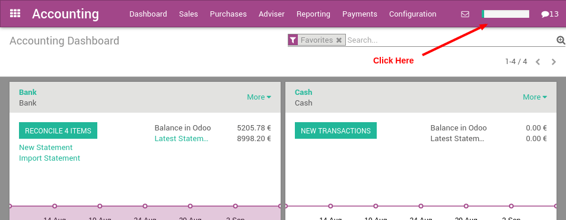

The Odoo Accounting application has an implementation guide that you should follow to configure it. It's a step-by-step wizard with links to the different screens you will need.
Once you have installed the Accounting application, you should click on the top-right progressbar to get access to the implementation guide.
The implementation guide will help you through the following steps:
- Completing your company settings
- Entering in your bank accounts
- Selecting your chart of accounts
- Confirming your usual tax rates
- Setting up any foreign currencies
- Importing your customers
- Importing your suppliers
- Importing your products
- Importing your outstanding transactions
- Importing your starting balances
- Define the users for accounting
Once a step is done, you can click on the "Mark as Done" button, in the bottom of the screen. That way, you can track the progress of your overall configuration of Odoo.